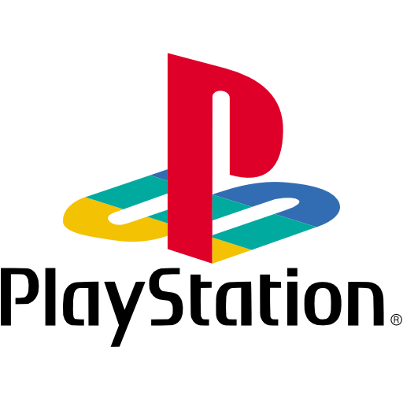

La historia de la programación informática:
Los precursores de la programación antes de los años 1940:

Programar, sea cual sea el lenguaje utilizado (HTML, CSS, lenguaje C, PHP, Java, JavaScript, Python, etc.), consiste en escribir en un lenguaje que entienda la máquina, es decir, cómo nos comunicamos con un ordenador y los algoritmos. Las mujeres, pioneras en el desarrollo de los algoritmos.
Saber programar es ser capaz de crear aplicaciones web y móviles, páginas web, interfaces-usuario, softwares de programación, pilotar y programar robots informatizados. Podríamos pensar que la historia de la programación es reciente.
Sin embargo, las premisas de los lenguajes de programación se remontan al siglo XIX, mucho antes de la invención del ordenador. El primer modelo de programación del mundo se remonta al año 1842.
En 1840, Ada Lovelace (1814-1852) consiguió definir el principio de iteraciones sucesivas mediante la ejecución de una única operación. Se dice que creó la palabra algoritmo en honor a Al Khawarizmi (780-850), para designar el proceso lógico de ejecución de un programa.
Al Khawarizmi fue un matemático del califato abasí (Ouzbèke), conocido por haber introducido el álgebra en Europa y por haber clasificado los algoritmos conocidos en su época según su terminación.
Ada Lovelace (su verdadero nombre era Augusta Ada Byron) tradujo en 1842-1843 la memoria de un matemático italiano sobre la máquina analítica del inglés Charles Babbage (1791-1871). Los cálculos de la máquina estaban en tarjetas perforadas en las que la información estaba cifrada. Ada elaboró un método para calcular los números de Bernoulli en estas tarjetas perforadas, lo que posteriormente sería considerado como el primer programa informático del mundo. Ada Lovelace estuvo en el origen de las máquinas de cálculo, que se componían de los siguientes elementos:
Un dispositivo que permite cifrar datos digitales (tarjetas perforadas, ruedas dentadas).
Una memoria para guardar los valores numéricos.
Una unidad de control gracias a la cual el usuario le indica a la máquina lo que tiene que hacer.
Un «motor» encargado de hacer los cálculos.
Un dispositivo que permite saber los resultados.
Los primeros ordenadores eléctricos aparecieron cien años más tarde, a principios de la década de 1940. Estas primeras máquinas tenían poca memoria y no eran rápidas ejecutando tareas, por lo que aún había que hacer cálculos largos y engorrosos. Los científicos tenían que escribir los programas y el lenguaje-máquina a mano.
Entre 1943 y 1945, el alemán Konrad Zuse creó el lenguaje Plankalkül, un prototipo del primer lenguaje de alto nivel, pero que nunca fue utilizado.
La programación en la era de los primeros ordenadores:
Habrá que esperar hasta la Segunda Guerra Mundial para que se invente el primer ordenador de todos los tiempos, el ENIAC (Electronic Numerical Integrator And Computer).
Este ordenador eléctrico estaba programado, en teoría, para resolver todos los problemas de cálculo.
En la década de 1950 será cuando las técnicas de programación informática se desarrollen en gran medida. Es de nuevo una mujer quien desarrolla el primer compilador, llamado A0. Esta mujer es la americana Grace Murray Hopper (1906-1992) que trabajó en la marina americana a petición de este organismo. Su invención permitía generar un programa binario a partir de un código fuente.
El lenguaje Fortran (Formula Translator) es la gran creación del ingeniero de IBM John Backus. Ingenió el primer lenguaje de programación de alto nivel y funcional. Fue utilizado para el cálculo científico.
Entre los lenguajes informáticos desarrollados en los años 1950 podemos destacar el LISP, para la gestión de listas, y el COBOL, inventado para programar una aplicación de gestión.
Otro hito en la historia de la programación es la invención del lenguaje ALGOL (Algorithmic Oriented Language), el primer lenguaje que permitió describir los problemas de cálculo de forma algorítmica.
Fortran y Cobol serán los acompañantes del progreso de la informática, sobre todo en lo referido al desarrollo de ordenadores transistorizados. El COBOL es el lenguaje más utilizado en el mundo desde hace 20 años y que tiene el mayor número de líneas de código de programación del mundo.
En la década de 1960 se perfeccionará la tecnología existente y la puesta a punto de los lenguajes y de la lógica informática.
Desde 1960 hasta 1980 la adolescencia de la programación:
Este período coincide con la Guerra Fría y con los Años Dorados (o Edad de Oro del capitalismo) en el que hubo un auge en la investigación, lo que favoreció el desarrollo de la programación. Ken Thomson y Dennis Ritchie, conocidos por haber desarrollado el lenguaje C. El primer lenguaje de programación orientado a objetos y de simulación por eventos discretos fue el Simula 67.
El lenguaje C vio la luz entre 1969 y 1973. Era un lenguaje de nivel bajo inventado para reescribir UNIX. Actualmente, 50 años más tarde, es uno de los lenguajes más utilizados por los desarrolladores y programadores.
El lenguaje Pascal se desarrolló en 1970 como descendiente de ALGOL. Sirvió para desarrollar el sistema operativo de los ordenadores Apollo y Macintosh, así como la primera versión del Adobe Photoshop.
El SQL (Structured Query Language) se creó en 1974.
En 1983 aparece el lenguaje C++. Este lenguaje compilado fue escrito por Bjarne Stroustrup. Posteriormente llega el Objective-C inventado por Brad Cox.
Es el primer lenguaje de programación orientado a objetos reflexión y fue utilizado por NeXTSTEP de la empresa NeXT (fundada por Steve Jobs) y después para los OS de Apple.
Durante la década de 1980 la utilización de los códigos informáticos se expandieron y se crearon nuevos lenguajes como Dbase, C++, Eiffel, Mathematica, Perl y Tcl/Tk.
Los lenguajes de programación y los servidores web:
Aunque el lenguaje de programación se desarrollaba a buen ritmo, era tan solo la fase embrionaria. La década de 1990 marca el inicio de la programación web con los primeros balbuceos de Internet.
El surgimiento de los lenguajes informáticos trajo consigo las dudas sobre la utilidad que el desarrollo de estas máquinas tendría para la sociedad. Numerosos pensadores de la época se mostraran escépticos con este tema.
Es por ejemplo el caso del economista neoclásico Robert Solow, con su paradójico epónimo de 1987, según el cual «vemos ordenadores por todos lados, excepto en las estadísticas de productividad». Sin duda fue el conservadurismo y el juicio prematuro con visión cortoplacista lo que les impidió ver el potencial revolucionario del algoritmo y de la programación; que sería revelado en la década de 1990.
Los años 90 y 2000 marcan el inicio de los servidores web y la era de Internet. Con la web aparecen los lenguajes de scripts, los lenguajes interpretados, herederos de los lenguajes de control integrados en los sistemas operativos. Estas innovaciones, integradas en las páginas web y programadas de forma sencilla para facilitar la sucesión de tareas simples, funcionan en programas pequeños y sencillos.
Algunos de estos lenguajes son hoy en día esenciales:
Python, creado en 1991.
PHP, JavaScript y Java, creados en 1995.
Ruby, inventado en 1993.
C#, escrito en 2000.
Python fue escrito con la finalidad de crear un lenguaje orientado a objetos y multiplataforma para optimizar la productividad de los programadores con un lenguaje de alto nivel y una sintaxis simple. Treinta años más tarde muchos estudiantes siguen aprendiendo a programar con Python, sobre todo para la investigación científica.
Python permite iniciarse en conceptos simples y en las bases de programación. Como anécdota, comentar que Guido van Rossum bautizó con este nombre a este lenguaje porque era fan de la serie Monty Python.
El lenguaje PHP (Hypertext Preprocessor) fue escrito en 1994 por Rasmus Lerdorf cuando tenía 26 años para desarrollar su propia página web. Algunos años más tarde, la mayoría de las páginas web serían programadas en PHP, entre las que podemos nombrar Wikipedia, Facebook y YouTube.
El aprendizaje de programación incluye también la memorización de las líneas de código informático en JavaScript. Este lenguaje permite desarrollar páginas web dinámicas para mejorar la experiencia de usuario. No confundas Java con JavaScript, no son el mismo lenguaje.
Breve historia de la cultura hacker:
Exploramos los orígenes de la cultura hacker, incluyendo la prehistoria de los Auténticos Programadores, los buenos tiempos del Laboratorio de Inteligencia Artificial del MIT, y cómo la antigua ARPANET dio lugar a la primera "nación de redes". Nubarrones sobre Júpiter. Se describe el auge inicial de Unix y su posterior estancamiento.
La nueva esperanza surgida en Finlandia y cómo el "último hacker auténtico" se convierte en patriarca de las nuevas generaciones. Esbozamos la forma en que Linux y la popularización de Internet sacaron a la cultura hacker de los márgenes del conocimiento público hasta el lugar relevante que ocupa actualmente.
Los Auténticos Programadores:
Al principio fueron los Auténticos Programadores.
No era así como se llamaban a sí mismos. Tampoco "hackers" ni nada parecido; el sobrenombre "Auténtico Programador" (Real Programmer) no sería usado hasta el año 1980, en que uno de ellos lo hizo de forma retrospectiva.
Desde 1945, las tecnologías de la computación habían atraído a muchos de los cerebros más brillantes y creativos del mundo. Desde el primer computador ENIAC de Eckert y Mauchly, existió una cultura técnica de cierta continuidad, consciente de sí misma, compuesta por programadores entusiastas; personas que creaban y manipulaban software por pura diversión.
Los Auténticos Programadores provenían habitualmente de disciplinas como la ingeniería o la física y con frecuencia se trataba de radioaficionados. Llevaban calcetines blancos, camisas de poliéster con corbata y gafas gruesas, y programaban en código máquina, en ensamblador, en FORTRAN y en media docena más de arcaicos lenguajes ya olvidados.
Desde el fin de la Segunda Guerra Mundial hasta comienzos de los 70, en los felices días del procesamiento por lotes y las grandes supercomputadoras "de hierro", los Auténticos Programadores constituyeron la cultura técnica dominante en el ámbito de la computación. Algunos vestigios venerados del folklore hacker datan de esta época, entre ellos varias listas de las Leyes de Murphy y el póster germano-burlesco "Blinkenlights" que aún adorna muchas salas de computadoras.
Algunas de las personas que crecieron en la cultura de los Auténticos Programadores permanecieron en activo hasta bien entrados los 90. Seymour Cray, diseñador de la gama de supercomputadoras Cray, fue uno de los mejores.

Se dice de él que, en cierta ocasión, introdujo de principio a fin un sistema operativo de su invención en una de sus computadoras, usando los conmutadores de su panel de control. En octal. Sin un solo error. Y funcionó. Un "macho supremo" entre los Auténticos Programadores.
Sin embargo, la cultura de los Auténticos Programadores estaba demasiado ligada al procesamiento por lotes, concretamente al de tipo científico y fue eclipsada por el auge de la computación interactiva, las universidades y las redes. Estas dieron lugar a otra tradición de la ingeniería que, con el tiempo, evolucionaría en la cultura hacker del código abierto que hoy conocemos.
Los primeros hackers:
Los comienzos de la cultura hacker, tal como la conocemos actualmente, se pueden fechar con seguridad en 1961, año en que el MIT adquirió la primera PDP-1. El comité de Señales y Energía del Tech Model Railroad Club adoptó la computadora como su juguete tecnológico preferido e inventó herramientas de programación, un argot y toda una cultura en torno a ella que aun hoy puede reconocerse entre nosotros. Estos primeros años han sido examinados en la primera parte del libro de Steven Levy, Hackers.
La cultura en torno a las computadoras del MIT parece haber sido la primera en adoptar el termino "hacker". Los hackers del Tech Model Railroad Club se convirtieron en el núcleo del Laboratorio de Inteligencia Artificial del MIT, el centro más destacado de investigación sobre Inteligencia Artificial de todo el mundo a principios de los 80. Su influencia se extendió por todas partes a partir de 1969, año de creación de ARPANET.
ARPANET fue la primera red intercontinental de alta velocidad. Fue construida por el Departamento de Defensa estadounidense como un experimento de comunicaciones digitales, pero creció hasta interconectar a cientos de universidades, contratistas de defensa y centros de investigación. Permitió a investigadores de todas partes intercambiar información con una rapidez y flexibilidad sin precedentes, dando un gran impulso a la colaboración y aumentando enormemente el ritmo y la intensidad de los avances tecnológicos.
Pero ARPANET hizo algo más. Sus autopistas electrónicas reunieron a hackers de toda Norteamérica en una masa crítica: en lugar de permanecer en pequeños grupos aislados desarrollando efímeras culturas locales, se descubrieron (o reinventaron) a sí mismos como una tribu interconectada.
Las primeras creaciones deliberadas de la cultura hacker las primeras listas de argot, las primeras sátiras, las primeras discusiones conscientes sobre la ética del hacker, se propagaron por ARPANET en sus primeros años. Concretamente, la primera versión del Jargon File o "Archivo de la Jerga" se desarrolló mediante colaboración descentralizada entre 1973 y 1975.
Este diccionario de argot se convirtió en un documento definitivo de esta cultura. Posteriormente sería publicada como The Hacker's Dictionary, en el año 1983; aquella primera versión está ya agotada, pero existe una edición revisada y ampliada: The New Hacker's Dictionary.
La cultura hacker floreció en las universidades conectadas a la red, especialmente (aunque no exclusivamente) en sus departamentos de informática. El Laboratorio de IA del MIT fue, prácticamente, el primero desde finales de los años sesenta. Pero el Laboratorio de Inteligencia Artificial de Stanford (SAIL) y la Universidad de Carnegie Mellon le seguían muy de cerca. Todos fueron prósperos centros de informática e investigación sobre IA. Todos ellos atrajeron a gente brillante que hizo numerosas aportaciones a la cultura hacker, tanto en el ámbito técnico como en el folklórico.
Para comprender lo que vendría después, necesitamos de nuevo echar un vistazo a lo que ocurría con los propios computadores, pues tanto el auge como la posterior caída del Laboratorio del MIT fueron determinados por cambios en la tecnología informática.
Desde los días del PDP-1, el destino de la cultura hacker había estado unido a las computadoras PDP de DEC, Digital Equipment Corporation. Esta compañía fue pionera en la computación interactiva para empresas y en sistemas operativos de tiempo compartido. Debido a la flexibilidad y potencia de sus máquinas y a unos precios relativamente económicos para la época, muchas universidades las compraron.
Los asequibles sistemas de tiempo compartido fueron el medio en el cual creció la cultura hacker y, durante la mayor parte de su existencia, ARPANET fue principalmente una red de computadoras DEC. La más importante de estas fue la PDP-10, aparecida en 1967. La 10 fue la favorita de los hackers durante casi 15 años; TOPS-10 (el sistema operativo de DEC para ella) y MACRO-10 (su lenguaje ensamblador) todavía se recuerdan con nostalgia en una gran cantidad de argot y folklore.
El MIT, aunque hizo uso de la PDP-10 como todo el mundo, tomó un camino ligeramente diferente; rechazó por completo el software de DEC para ella y construyó su propio sistema operativo, el legendario ITS, cuyo significado, Sistema de Tiempo-compartido Incompatible, da una pista bastante buena sobre la actitud de los hackers del MIT. Querían hacerlo a su manera. Afortunadamente para todos, la gente del MIT poseía tanta inteligencia como arrogancia. El extraño ITS, con sus excentricidades y errores ocasionales, albergó toda una brillante sucesión de innovaciones técnicas y todavía conserva el record del sistema de tiempo compartido más largamente usado.
ITS fue escrito en ensamblador, pero muchos proyectos relacionados se escribieron en el lenguaje de Inteligencia Artificial LISP.

Este fue mucho más potente y flexible que cualquier otro lenguaje de la época; de hecho, tiene un mejor diseño que la mayoría de lenguajes de hoy en día, veinticinco años después. LISP dio a los hackers de ITS libertad para pensar de forma creativa y poco convencional. Fue un factor importante en sus éxitos y aún sigue siendo uno de los lenguajes preferidos por los hackers.
Muchas de las creaciones técnicas dentro de la cultura del ITS aún perduran; el programa de edición Emacs es quizá el más conocido. Y gran parte del folklore del ITS está aún vivo entre los hackers, como puede leerse en Jargon File.
Pero el SAIL y la CMU no habían estado dormidos. Muchos de los hackers más destacados que surgieron alrededor de las PDP-10 del SAIL serían más tarde figuras clave en el desarrollo de los computadores personales y las interfaces de ventanas con ratón e iconos que hoy día conocemos. Mientras tanto, los hackers de la CMU estuvieron trabajando en lo que les llevaría a liderar las primeras aplicaciones prácticas a gran escala de los Sistemas Expertos y la Robótica Industrial.
Otro nodo importante en la cultura fue el PARC de XEROX, el célebre Centro de Investigación de Palo Alto (California). Durante más de una década, desde los primeros 70 a mitad de los 80, el PARC produjo una sorprendente cantidad de hardware revolucionario e innovaciones software. El ratón moderno, las ventanas y la interfaz gráfica basada en iconos se inventaron allí. También la impresora láser y las redes de área local. Y la serie D de computadoras del PARC se anticipó a los potentes PC de los 80 en más de una década.
Por desgracia, aquellos profetas carecieron de reconocimiento en su propia empresa. Tanto es así que se convirtió en broma habitual el describir el PARC como el lugar donde se desarrollaban ideas brillantes para provecho de los demás. Su influencia en la cultura hacker fue profunda.
Las culturas alrededor de ARPANET y las PDP-10 crecieron en fuerza y variedad durante los años 70. Las herramientas de listas de correo electrónicas, que se habían usado para fomentar la cooperación intercontinental entre grupos de intereses comunes, fueron utilizándose cada vez más con propósitos sociales y recreativos. DARPA hizo la vista gorda de forma consciente a toda esta actividad "no autorizada": comprendía que este coste operativo extra era un precio asequible a cambio de atraer a toda una generación de jóvenes de talento al área de la informática.
Quizá la más conocida entre las listas electrónicas "sociales" de ARPANET fue la lista SF-LOVERS, para fans de la ciencia ficción; aún hoy tiene bastante movimiento en su versión de Internet, de la que ARPANET fue embrión. Pero hubo otras muchas, que crearon un estilo de comunicación que más tarde ofrecerían servicios comerciales de tiempo compartido como Compuserve, GEnie y Prodigy (y que finalmente lideraría AOL).
El surgimiento de Unix:
Lejos de la atractiva vida de ARPANET, en la jungla de New Jersey, algo venía ocurriendo desde 1969 que llegaría a eclipsar la tradición de la PDP-10. El año que vio nacer a ARPANET también fue el año en que un hacker de Laboratorios Bell llamado Ken Thompson inventó Unix.

Thompson había estado involucrado en el desarrollo de un sistema operativo de tiempo compartido llamado "Multics", que compartía ascendencia con ITS. Multics fue un buen campo de pruebas para algunas ideas importantes sobre cómo ocultar al usuario o incluso a los programadores las complejidades de un sistema operativo. La idea era hacer a Multics más fácil de usar (y de programar) para poder así centrarse en el verdadero trabajo a realizar.
Laboratorios Bell se salió del proyecto cuando Multics mostró síntomas de haber ido inflándose hasta convertirse en un mastodonte inútil (el sistema sería posteriormente comercializado sin apenas éxito por Honeywell). Ken Thompson echó de menos el entorno Multics y comenzó a realizar pruebas, implementando una mezcla de sus características y algunas ideas propias en una vieja DEC PDP-7 rescatada de la basura.
Otro hacker llamado Dennis Ritchie inventó un nuevo lenguaje llamado C para usarlo en el embrionario Unix de Thompson. Al igual que Unix, C fue diseñado para ser ameno, flexible y no imponer límites. Pronto, el interés por estas herramientas se fue extendiendo por Laboratorios Bell y se les dio un buen impulso en 1971, cuando Thompson y Ritchie recibieron una oferta para crear lo que ahora llamaríamos un sistema de automatización de oficinas, para uso interno de los laboratorios. Pero Thompson y Ritchie tenían la mirada puesta en un trofeo más importante.
Tradicionalmente, los sistemas operativos se escribían por completo en ensamblador para obtener la máxima eficiencia de las computadoras donde se instalaban. Thompson y Ritchie fueron de los primeros en darse cuenta de que las tecnologías del hardware y de los compiladores habían mejorado lo suficiente como para que un sistema operativo pudiera escribirse usando únicamente C, llegado 1978 el sistema completo había sido portado con éxito a varios tipos de computadoras.
Esto nunca antes se había hecho, y las implicaciones fueron enormes. Si Unix podía tener la misma apariencia, el mismo potencial, en computadoras de distinto tipo, podría servir de entorno software común para todas ellas. Los usuarios no tendrían que pagar por un nuevo diseño de software cada vez que una máquina se quedara obsoleta. Los hackers podrían trasladar sus herramientas entre distintas computadoras, en vez de tener que reinventar los equivalentes del fuego y la rueda cada vez.
Además de la portabilidad, Unix y C tenían otras importantes cualidades. Ambos se crearon con una filosofía de tipo "hazlo sencillo, idiota": un programador podía retener en la cabeza la estructura lógica de C (al contrario que con la mayoría de lenguajes) en lugar de recurrir continuamente a los manuales. Unix se estructuró como un conjunto de herramientas flexible, compuesto por diversos programas sencillos, diseñados para poderse combinar entre ellos de distintas y provechosas maneras.
La combinación demostró poder adaptarse a un amplio rango de tareas de computación, incluyendo muchas del todo imprevistas por sus diseñadores. Se extendió rápidamente por AT&T, a pesar de la falta de un programa oficial de soporte. Hacia 1980, se había extendido por un gran numero de centros de computación de laboratorios y universidades, y miles de hackers lo consideraban su hogar.
Las máquinas habituales en los primeros tiempos de la cultura Unix eran las PDP-11 y su descendiente, la VAX. Pero debido a la portabilidad de Unix, se ejecutó, prácticamente sin sufrir cambios, en máquinas tan diversas como las que podían encontrarse en toda ARPANET. Y nadie usaba ensamblador: los programas en C eran fácilmente portables entre todas estas máquinas.
Unix tenía incluso su propio sistema de redes, de tipo UUCP: con velocidades bajas y poca fiabilidad en la transmisión, pero barato. Cualquier par de máquinas Unix podía intercambiar correo electrónico "punto a punto" usando líneas telefónicas convencionales; esta funcionalidad estaba integrada en el propio sistema, no era ningún extra opcional. En 1980 los primeros servidores de USENET comenzaron a intercambiar noticias, formando un gigantesco tablón de anuncios que pronto crecería hasta superar en tamaño a ARPANET. Los servidores Unix pasaron a constituir su propia "nación de redes" en torno a USENET.
Unix tenía incluso su propio sistema de redes, de tipo UUCP: con velocidades bajas y poca fiabilidad en la transmisión, pero barato. Cualquier par de máquinas Unix podía intercambiar correo electrónico "punto a punto" usando líneas telefónicas convencionales; esta funcionalidad estaba integrada en el propio sistema, no era ningún extra opcional.
En 1980 los primeros servidores de USENET comenzaron a intercambiar noticias, formando un gigantesco tablón de anuncios que pronto crecería hasta superar en tamaño a ARPANET. Los servidores Unix pasaron a constituir su propia "nación de redes" en torno a USENET.
ARPANET también contaba con algunos servidores Unix. Pronto las culturas de las PDP-10 y de Unix/USENET entraron en contacto y sus límites se empezaron a desdibujar, aunque en un principio no fue fácil. Los hackers de las PDP-10 miraban a la gente de Unix como un hatajo de advenedizos, que usaban herramientas ridículamente primitivas en comparación con la complejidad de ITS y LISP, adorablemente barroca. "Cuchillos de piedra y pieles de oso", era lo que solían murmurar.
Y aún existía una tercera corriente. El primer computador personal había salido al mercado en 1975; Apple se fundó en 1977 y los avances se sucedieron con increíble rapidez durante los años que siguieron. El potencial de los microordenadores estaba claro y atrajo a otra nueva generación de jóvenes hackers. Su lenguaje era el BASIC, tan primitivo que los adeptos a las PDP-10 y los entusiastas del Unix lo consideraban absolutamente despreciable.
El fin de los viejos tiempos:
Así estaban las cosas en 1980: tres culturas cuyos bordes se solapaban pero estaban agrupadas en torno a tecnologías muy distintas. La cultura de las PDP-10 y ARPANET, ligada a LISP, a MACRO, a TOPS-10, a ITS y al SAIL; la gente de Unix y C con sus PDP-11, sus VAXen y sus conexiones telefónicas rudimentarias, y una anárquica horda de entusiastas de los primeros microordenadores, decididos a acercar el potencial de las computadoras al pueblo.
De entre todos ellos, la cultura del ITS aún podía reclamar un puesto de honor, pero sobre el Laboratorio se cernían nubarrones de tormenta. La tecnología de las PDP-10 sobre la que se asentaba ITS estaba quedándose obsoleta, y el propio Laboratorio se dividió en facciones tras los primeros intentos de comercializar la Inteligencia Artificial. Algunos de los mejores del Laboratorio (y del SAIL y la CMU) fueron seducidos por empleos muy bien pagados en empresas de nueva creación.
El golpe de gracia vino en 1983, cuando DEC canceló Jupiter, su continuación para la PDP-10, pasando a concentrarse en las líneas de las PDP-11 y las VAX. ITS ya no tenía futuro. Como no era portable, trasladar ITS a un nuevo hardware suponía un esfuerzo mayor del que cualquiera podía permitirse.
La variante de Berkeley del Unix ejecutándose en máquinas VAX, se convirtió en el sistema "para hackers" por excelencia, y todo aquel con visión de futuro pudo ver que el potencial de los microordenadores estaba creciendo tan rápidamente que probablemente estos llegarían a barrer con todo a su paso.
Fue más o menos en aquel momento cuando Levy escribió Hackers. Uno de sus principales informadores fue Richard M. Stallman (inventor de Emacs), una figura clave en el Laboratorio y su más firme resistencia frente a la comercialización de la tecnología de este.

Stallman (a quien se le conoce habitualmente por sus iniciales y nombre de "login", RMS) siguió adelante, formando la Free Software Foundation ("Fundación del Software Libre") y se dedicó a la producción de software libre de calidad. Levy lo elogió llamándole "el último hacker auténtico", una denominación que felizmente resultó ser incorrecta.
El grandioso plan de Stallman resumió nítidamente la transición que iba a experimentar la cultura hacker a principios de los 80: en 1982 comenzó la construcción de un clon completo de Unix, escrito en C y disponible gratuitamente. Su proyecto se conoció como sistema operativo GNU ("GNU No es Unix") en una especie de acrónimo recursivo.
GNU pronto se convirtió en un foco importante de la actividad de los hackers. Así, el espíritu y la tradición de ITS fueron preservados como parte importante de la nueva cultura hacker, centrada en VAX y Unix.
De hecho, desde su fundación y durante más de una década, la Free Software Foundation de RMS definiría en gran parte la ideología común de la cultura hacker, y el propio Stallman sería el único candidato creíble al liderazgo de la tribu.
Sucedió también entre 1982 y 1983 que las tecnologías del microchip y la red de área local comenzaron a causar un impacto importante en la cultura hacker. Ethernet y el microchip 68000 de Motorola constituían una combinación de gran potencial, y aparecieron nuevas empresas que acabarían por desarrollar la primera generación de lo que hoy llamamos estaciones de trabajo.
En 1982, un grupo de hackers del Unix provenientes de Standford y Berkeley fundaron Sun Microsystems, en la creencia de que Unix, corriendo en el hardware relativamente económico basado en el 68000, resultaría una combinación ganadora en una amplia variedad de aplicaciones. Estaban en lo cierto, y su visión fijó las normas para toda una nueva industria. Aunque sus precios quedaban fuera del alcance de muchos particulares, las estaciones de trabajo resultaban baratas para las empresas y universidades; las redes de estas (una para cada usuario) reemplazaron rápidamente las viejas VAX y otros sistemas de tiempo compartido.
La era del Unix propietario:
En 1984, cuando Ma Bell cerró y Unix pasó a ser un producto respaldado por AT&T, la escisión más importante en la cultura hacker se daba entre una "nación de redes" más o menos consistente, basada en Internet y USENET (y compuesta en su mayoría por servidores o estaciones de trabajo corriendo Unix) y una inmensa área remota, desconectada, formada por entusiastas de los microordenadores.
Fue también más o menos por aquel entonces cuando la prensa se ocupó por primera vez de episodios importantes relacionados con el cracking, y , fue aquí cuando los periodistas comenzaron a hacer un mal uso del término "hacker" para referirse a vándalos informáticos, uso que tristemente aún perdura.
Las estaciones de trabajo creadas por Sun y otros, abrieron nuevos caminos para los hackers. Se habían fabricado para realizar gráficos de alto rendimiento y ofrecer datos compartidos en las redes.
Durante los años 80, la comunidad hacker estuvo bastante ocupada con el reto de crear el software y las herramientas necesarias para obtener el máximo de estas prestaciones. El Unix de Berkeley incorporó soporte integrado para los protocolos de ARPANET, que ofrecieron una solución a los problemas de funcionamiento en red asociados a las lentas conexiones UUCP y estimuló el crecimiento de Internet.
Hubo varios intentos de domesticación de los gráficos para estaciones de trabajo. El que prevaleció fue el sistema X Window, desarrollado en el MIT con la colaboración de cientos de individuos pertenecientes a docenas de empresas.
Un factor determinante para su éxito fue el hecho de que los desarrolladores estaban dispuestos a ceder las fuentes de forma gratuita de acuerdo con la ética hacker, pudiendo distribuirlos en Internet. La victoria de X frente a sistemas gráficos propietarios (incluido el propuesto por la propia Sun) fue un importante presagio de los cambios que, unos años más tarde, afectarían profundamente al propio Unix.
Aún a veces se respiraba cierto tedio faccionario en la rivalidad entre ITS y Unix (sobre todo en la parte de los partidarios de ITS). Pero la ultima computadora con ITS se apagó para siempre en 1990; los fanáticos se quedaron sin su razón de ser y la mayoría de ellos se fue adaptando, con mayor o menor grado de refunfuño, a la cultura Unix.
Entre la comunidad hacker conectada en red, la gran rivalidad de los 80 se dio entre los entusiastas del Unix de Berkeley y las correspondientes versiones de AT&T. Aún se pueden encontrar copias de un póster de la época en que un piloto caricaturizado de X-Wing sacado de la Guerra de las Galaxias abandona raudo a una Estrella de la Muerte envuelta en llamas, en la que se puede distinguir el logotipo de AT&T.

A los hackers de Berkeley les gustaba imaginarse como rebeldes enfrentados a desalmados imperios corporativos. El Unix de AT&T nunca alcanzó al de BSD/Sun en cuota de mercado pero ganó las guerras de estándares.
Para 1990 las versiones de AT&T y BSD se volvieron difíciles de distinguir, ya que cada una había ido adoptando gran parte de las innovaciones de la otra.
Con la llegada de los años 90, la tecnología de las estaciones de trabajo de la anterior década comenzó a verse seriamente amenazada por los nuevos computadores personales, baratos y de gran rendimiento, que se basaban en el chip 386 de Intel y sus derivados. Por primera vez, un hacker podía permitirse un computador doméstico comparable en potencia y capacidad de almacenamiento a los servidores de diez años antes, máquinas con Unix capaces de servir de plataforma de desarrollo y de comunicarse con Internet.
El mundo MS-DOS permaneció felizmente ajeno a todo esto. Aunque aquellos primeros entusiastas de los microordenadores pronto crecieron hasta formar una población de hackers del DOS y de los Mac, muchas veces mayor a la de la cultura en torno a la red, nunca fueron conscientes de su propia condición. El ritmo de los cambios fue tan rápido que continuamente surgían decenas de culturas técnicas que pronto desaparecían, sin llegar nunca a tener la estabilidad necesaria para desarrollar una tradición común con su propia jerga, su folklore y su historia mítica. La ausencia de una red realmente popular que se pudiera comparar a UUCP o a Internet les impidió convertirse en otra "nación de redes".
El acceso generalizado a servicios on-line comerciales como Compuserve o GEnie estaba empezando a afianzarse, pero el hecho de que los sistemas operativos (a excepción de Unix) no llevaran integradas herramientas de desarrollo hizo que los códigos fuente compartidos mediante este tipo de conexiones fuera escaso. Así que no pudo desarrollarse una tradición de colaboración entre hackers.
A la corriente principal de la cultura hacker, (des)organizada en torno a Internet, y que hasta el momento se identificaba mayoritariamente con la cultura técnica de Unix, le traía sin cuidado este tipo de servicios comerciales. Lo único que deseaba eran mejores herramientas y más Internet, y los económicos PCs de 32 bits prometían poner todo esto al alcance de cualquiera.
Pero ¿dónde estaba el software? Los Unix comerciales seguían siendo caros, del orden de varios "kilodólares". A principios de los noventa, varias empresas hicieron un intento de vender adaptaciones del Unix de AT&T o de BSD para PC.
El éxito fue esquivo; los precios no habían bajado demasiado y, lo peor de todo, al adquirir el sistema operativo no disponías del código fuente para poder modificarlo y distribuirlo. El negocio del software no proporcionaba a los hackers lo que ellos querían.
Tampoco lo estaba haciendo la Free Software Foundation. El desarrollo de HURD, el kernel gratuito de Unix tan largamente prometido por RMS a la comunidad hacker, quedó estancado durante años y no logró producir nada parecido a un kernel utilizable hasta 1996 (aunque para 1990 la FSF ya podía ofrecer el resto de componentes complejos de un sistema operativo similar a Unix).
Peor aún, en 1990 estaba cada vez más claro que un esfuerzo de diez años para comercializar Unix representaba prácticamente un fracaso. La promesa de Unix de portabilidad entre plataformas se perdió en disputas infructuosas entre media docena de versiones propietarias de Unix. Los participantes demostraron ser tan lentos, tan ciegos y tan ineptos en cuestiones de marketing que Microsoft pudo arrebatarles una inmensa porción de su mercado con la tecnología escandalosamente inferior de su sistema operativo Windows.
A principios de 1993, un observador hostil podría haber tenido motivos suficientes para opinar que la historia del Unix estaba prácticamente terminada, y con ella la suerte de la tribu hacker. Y los observadores hostiles no escaseaban precisamente en la prensa informática; muchos de ellos habían estado prediciendo de forma ritual la muerte inminente del Unix a intervalos de seis meses desde finales de los 70.
En aquellos días era de sabiduría popular el pensar que la era del tecno-heroísmo individual había llegado a su fin, que la industria del software y la naciente Internet serían progresivamente dominadas por colosos como Microsoft. La primera generación de hackers de Unix parecía estar ya vieja y cansada (el grupo de Investigación de Ciencias de la Computación de Berkeley fue perdiendo empuje y se quedó sin financiación hacia 1994). Fue una época deprimente.
Afortunadamente, habían ocurrido cosas lejos de la mirada de la prensa del sector, e incluso de la de muchos hackers, que poco después, en 1993 y 1994, darían lugar a desarrollos tremendamente positivos. Con el tiempo, estos conducirían a la cultura hacker en una dirección totalmente nueva, llena de éxitos ni siquiera soñados.
Los primeros Unix libres:
En el hueco dejado por el incompleto HURD de la Free Software Foundation se había deslizado un estudiante de la Universidad de Helsinki llamado Linus Torvalds. En 1991 había empezado a desarrollar un kernel libre para máquinas 386 usando el conjunto de herramientas de la FSF. Su rápido éxito inicial atrajo a muchos hackers de Internet con la intención de ayudarle a desarrollar Linux, un sistema Unix completo de código fuente totalmente abierto y redistribuible.

Linux no estaba libre de competidores. En 1991, al mismo tiempo que tenían lugar las primeras pruebas de Linus Torvalds, William y Lynne Jolitz estaban portando, de manera experimental, los fuentes de BSD Unix a la arquitectura del 386. Cualquier observador que hubiera comparado la tecnología BSD con los primeros y toscos esfuerzos de Linus habría confiado en que las adaptaciones del BSD se convertirían en los Unix libres para PC más importantes.
Sin embargo, la ventaja más importante de Linux no era de carácter técnico, sino sociológico. Hasta el momento en que comenzó a desarrollarse, todo el mundo había creído que cualquier software de la complejidad de un sistema operativo tenía que desarrollarse con una cuidadosa coordinación por un grupo de personas bien cohesionado y relativamente pequeño.
Este modelo era y aún sigue siendo típico del software comercial así como de las grandes catedrales del software libre construidas por la FSF durante los años ochenta. También fue el modelo que se siguió en el caso de los proyectos FreeBSD, NetBSD y OpenBSD que surgieron a partir de la adaptación original 386BSD, realizada por los hermanos Jolitz.
Linux evolucionó de una forma completamente diferente. Desde casi el primer momento, fue programado de forma más bien eventual por un gran número de voluntarios coordinados a través de Internet. La calidad se mantenía, no con estándares rígidos o autocracia, sino con la estrategia, ingenuamente sencilla, de publicar cada semana y obtener la respuesta de cientos de usuarios en cuestión de días, creando un tipo de selección darwiniana rápida sobre las mutaciones presentadas por los desarrolladores. Para sorpresa de casi todo el mundo, esto funcionó bastante bien.
Para finales de 1993, Linux podía competir en estabilidad y fiabilidad con muchos de los Unix comerciales, y contaba con una cantidad inmensamente mayor de software. Incluso comenzaba a atraer adaptaciones de aplicaciones comerciales.
Un efecto indirecto de este desarrollo fue el exterminio de casi todos los pequeños proveedores de Unix propietario: sin desarrolladores ni hackers a los que vender su producto, tuvieron que cerrar. Uno de los pocos supervivientes, BSDI (Berkeley Systems Design, Incorporated) prosperó ofreciendo los fuentes completos junto a su Unix basado en BSD, y cultivando unos estrechos lazos con la comunidad hacker.
Estos desarrollos no destacaron demasiado en su momento, incluso dentro de la comunidad hacker, y mucho menos fuera de ella. La cultura hacker, desafiando las repetidas predicciones de su defunción, estaba empezando a reconstruir el mundo del software comercial a su imagen y semejanza. Sin embargo tendrían que pasar cinco años más, para que esta tendencia llegara a ser evidente.
La gran explosión de la Web:

Al crecimiento precoz de Linux se sumó otro fenómeno: el descubrimiento de Internet por parte del gran público. Los años noventa también contemplaron el nacimiento de una floreciente industria de proveedores de Internet que vendían conectividad por unos cuantos dólares al mes. Tras la invención de la World Wide Web, el ya de por sí rápido crecimiento de Internet aceleró hasta alcanzar un ritmo frenético.
En 1994, año en que el grupo de desarrollo del Unix de Berkeley suspendió formalmente sus actividades, eran varias las versiones libres de Unix (Linux y los descendientes del 386BSD) que actuaban como centros importantes de la actividad de los hackers.
Linux se estaba distribuyendo comercialmente en CD-ROM y se vendía como rosquillas. A finales de 1995, las principales empresas de informática hacían anuncios publicitarios elegantes en los que presumían de la integración de sus productos, tanto software como hardware, con Internet.
A finales de los 90, las principales actividades dentro de la cultura hacker eran el desarrollo de Linux y la universalización de Internet. La World Wide Web había convertido a Internet en un medio de comunicación de masas y muchos de los hackers de los ochenta y principios de los 90 montaron Proveedores de Servicios Internet con la intención de proporcionar acceso al gran público. Esta popularización de Internet confirió a la comunidad hacker cierta respetabilidad y autoridad política.
En 1994 y 1995, el activismo hacker acabó con la propuesta Clipper, que pretendía poner bajo control del gobierno métodos criptográficos robustos.
En 1996 los hackers movilizaron una amplia coalición contra la mal llamada "Acción por la Decencia en las Comunicaciones" (CDA), impidiendo la llegada de la censura a Internet.
Con esta victoria contra la CDA, pasamos de la historia a los acontecimientos actuales.
Historia de los videojuegos:
Durante bastante tiempo ha sido complicado señalar cual fue el primer videojuego, principalmente debido a las múltiples definiciones de este que se han ido estableciendo, pero se puede considerar como primer videojuego el Nought and crosses, también llamado OXO.

desarrollado por Alexander S.Douglas en 1952. El juego era una versión computerizada del tres en raya que se ejecutaba sobre la EDSAC y permitía enfrentar a un jugador humano contra la máquina.
En 1958 William Higginbotham creó, sirviéndose de un programa para el cálculo de trayectorias y un osciloscopio, Tennis for Two (tenis para dos): un simulador de tenis de mesa para entretenimiento de los visitantes de la exposición Brookhaven National Laboratory. Este videojuego fue el primero en permitir el juego entre dos jugadores humanos.
Cuatro años más tarde Steve Russell, un estudiante del Instituto de Tecnología de Massachussets, dedicó seis meses a crear un juego para computadora usando gráficos vectoriales: Spacewar!.
En este juego, dos jugadores controlaban la dirección y la velocidad de dos naves espaciales que luchaban entre ellas. El videojuego funcionaba sobre un PDP-1 y fue el primero en tener un cierto éxito, aunque apenas fue conocido fuera del ámbito universitario.
En 1966 Ralph Baer empezó a desarrollar junto a Albert Maricon y Ted Dabney, un proyecto de videojuego llamado Fox and Hounds dando inicio al videojuego doméstico.
Este proyecto evolucionaría hasta convertirse en la Magnavox Odyssey el primer sistema doméstico de videojuegos lanzado en 1972 que se conectaba a la televisión y que permitía jugar a varios juegos pregrabados.
La eclosión de los videojuegos (1970-1979):
Un hito importante en el inicio de los videojuegos tuvo lugar en 1971 cuando Nolan Bushnell comenzó a comercializar Computer Space, una versión de Space War, aunque otra versión recreativa de Space War como fue Galaxy War puede que se le adelantara a principios de los 70 en el campus de la universidad de Standford.
La ascensión de los videojuegos llegó con la máquina recreativa Pong que es considerada la versión comercial del juego Tennis for Two de Higginbotham. El sistema fue diseñado por Al Alcom para Nolan Bushnell en la recién fundada Atari.
El juego se presentó en 1972 y fue la piedra angular del videojuego como industria. Durante los años siguientes se implantaron numerosos avances técnicos en los videojuegos (destacando los microprocesadores y los chips de memoria). Aparecieron en los salones recreativos juegos como Space Invaders (Taito) o Asteroids (Atari).
La década de los 8 bits (1980-1989):
Los años 80 comenzaron con un fuerte crecimiento en el sector del videojuego alentado por la popularidad de los salones de máquinas recreativas y de las primeras videoconsolas aparecidas durante la década de los 70.
Durante estos años destacan sistemas como Oddyssey 2 (Phillips), Intellivision (Mattel), Colecovision (Coleco), Atari 5200, Commodore 64, Turbografx (NEC). Por otro lado en las máquinas recreativas triunfaron juegos como el famoso Pacman (Namco), Battle Zone (Atari), Pole Position (Namco), Tron (Midway) o Zaxxon (Sega).
El negocio asociado a esta nueva industria alcanzó grandes cosas en estos primeros años de los 80, pero sin embargo, en 1983 comenzó la llamada crisis del videojuego, afectando principalmente a Estados Unidos y Canadá, y que no llegaría a su fin hasta 1985.
Japón apostó por el mundo de las consolas con el éxito de la Famicom (llamada en occidente como Nintendo Entertainment System), lanzada por Nintendo en 1983 mientras en Europa se decantaba por los microordenadores como el Commodore 64 o el Spectrum.
A la salida de su particular crisis los norteamericanos continuaron la senda abierta por los japoneses y adoptaron la NES como principal sistema de videojuegos.
A lo largo de la década fueron apareciendo nuevos sistemas domésticos como la Master System (Sega), el Amiga (Commodore) y el 7800 (Atari) con juegos hoy en día considerados clásicos como el Tetris.
A finales de los 80 comenzaron a aparecer las consolas de 16 bits como la Mega Drive de Sega y los microordenadores fueron lentamente sustituidos por las computadoras personales basadas en arquitecturas de IBM.
En 1985 apareció Super Mario Bros, que supuso un punto de inflexión en el desarrollo de los juegos electrónicos, ya que la mayoría de los juegos anteriores sólo contenían unas pocas pantallas que se repetían en un bucle y el objetivo simplemente era hacer una alta puntuación.

El juego desarrollado por Nintendo supuso un estallido de creatividad. Por primera vez teníamos un objetivo y un final en un videojuego. En los años posteriores otras compañías emularon su estilo de juego.
En el campo de las recreativas, destacaron videojuegos como Defender, Rally-X, Dig Dug, Bubble Bobble, Gauntlet, Out Run o Shinobi además de producirse un cambio en cuanto a la nacionalidad de los juegos pasando a ser Japón la mayor productora.
Otra rama de los videojuegos que creció con fuerza fue la de los videojuegos portátiles. Estos comenzaron a principios de los 70 con los primeros juegos completamente electrónicos lanzados por Mattel, los cuales difícilmente podían considerarse como videojuegos, y fueron creciendo en popularidad gracias a conversiones de recreativas como las realizadas por Coleco o adictivos microjuegos como las Game & Watch de Nintendo.
La evolución definitiva de las portátiles como plataformas de videojuego llegó en 1989 con el lanzamiento de la Game Boy (Nintendo).

La revolución de las 3D (1990-1999):
A principios de los años 90 las videoconsolas dieron un importante salto técnico gracias a la competición de la llamada "generación de 16 bits" compuesta por la Mega Drive, la Super Nintendo Entertainmet de Nintendo, la PC Engine de NEC, conocida como Turbografx en occidente y la CPS Changer de (Capcom).
Junto a ellas también apareció la Neo Geo (SNK) una consola que igualaba las prestaciones técnicas de un arcade pero demasiado cara para llegar de forma masiva a los hogares.
Esta generación supuso un importante aumento en la cantidad de jugadores y la introducción de tecnologías como el CD-ROM, una importante evolución dentro de los diferentes géneros de videojuegos, principalmente gracias a las nuevas capacidades técnicas.
Mientras tanto diversas compañías habían comenzado a trabajar en videojuegos con entornos tridimensionales, principalmente en el campo de los PC, obteniendo diferentes resultados desde las “2D y media” de Doom, 3D completas de 4D Boxing a las 3D sobre entornos pre-renderizados de Alone in Dark. Referente a las ya antiguas consolas de 16 bits, su mayor y último logro se produciría por el SNES mediante la tecnología 3-D de pre-renderizados de SGI, siendo su máxima expresión juegos como Donkey Kong Country y Killer Instinct. También surgió el primer juego poligonal en consola, la competencia de la SNES, Mega-Drive, lanzó el Virtual Racing, que tuvo un gran éxito ya que marcó un antes y un después en los juegos 3D en consola.
Rápidamente los videojuegos en 3D fueron ocupando un importante lugar en el mercado, principalmente gracias a la llamada "generación de 32 bits" en las videoconsolas: Sony PlayStation y Sega Saturn (principalmente en Japón); y la “generación de 64 bits” en las videoconsolas: Nintendo 64 y Atari jaguar. En cuanto a los ordenadores, se crearon las aceleradoras 3D.
La consola de Sony apareció tras un proyecto iniciado con Nintendo (denominado SNES PlayStation), que consistía en un periférico para SNES con lector de CD. Al final Nintendo rechazó la propuesta de Sony, puesto que Sega había desarrollado algo parecido sin tener éxito, y Sony lanzó independientemente PlayStation.
Por su parte los arcades comenzaron un lento pero imparable declive según aumentaba el acceso a consolas y ordenadores más potentes.
Por su parte los videojuegos portátiles, producto de las nuevas tecnologías más poderosas, comenzaron su verdadero auge, uniéndose a la Game Boy máquinas como la Game Gear (Sega), Linx (Atari) o la Neo Geo Pocket (SNK), aunque ninguna pudo hacerle frente a la popularidad de la Game Boy, siendo esta y sus descendientes (Game Boy Pocket, Game Boy Color, Game Boy Advance, Game Boy Advance SP) las dominadoras del mercado.
Hacia finales de la década la consola más popular era la PlayStation.

Con juegos como Final Fantasy VII (Square), Resident Evil (Capcom), Winning Eleven 4 (Konami), Gran Turismo (Polyphony Digital) y Metal Gear Solid (konami).
En PC eran muy populares los FPS (juegos de acción en primera persona) como Quake (id Softare), Unreal (Epic Megagames) o Half-Life (Valve), y los RTS (juegos de estrategia en tiempo real) como Command & Conquer (Westwood) o Starcraft (Blizzard).
Además, conexiones entre ordenadores mediante internet facilitaron el juego multijugador, convirtiéndolo en la opción predilecta de muchos jugadores, y fueron las responsables del nacimiento de los MMORPG (juegos de rol multijugador online) como Ultima Online (Origin).
Finalmente en 1998 apareció en Japón la Dreamcast (Sega) y daría comienzo a la “generación de los 128 bits”.
El comienzo del nuevo siglo (2000):
En el 2000 Sony lanzó la anticipada PlayStation 2 y Sega lanzó otra consola con las mismas características técnicas de la Dreamcast, nada más que venia con un monitor de 14 pulgadas, un teclado, altavoces y los mismos mandos llamados Dreamcast Drivers 2000 Series CX-1.
Microsoft entra en la industria de las consolas creando la Xbox en 2001:


Nintendo lanzó el sucesor de la Nintendo 64, la Gamecube, y la primera Game Boy completamente nueva desde la creación de la compañía, la Game Boy Advance. Sega viendo que no podría competir, especialmente con una nueva máquina como la de Sony, anunció que ya no produciría hardware, convirtiéndose sólo en desarrolladora de software en 2002.
El ordenador personal PC es la plataforma más cara de juegos pero también la que permite mayor flexibilidad. Esta flexibilidad proviene del hecho de poder añadir al ordenador componentes que se pueden mejorar constantemente, como son tarjetas gráficas o de sonido y accesorios como volantes, pedales y mandos, etc. Además es posible actualizar los juegos con parches oficiales o con nuevos añadidos realizados por la compañía que creó el juego o por otros usuarios.